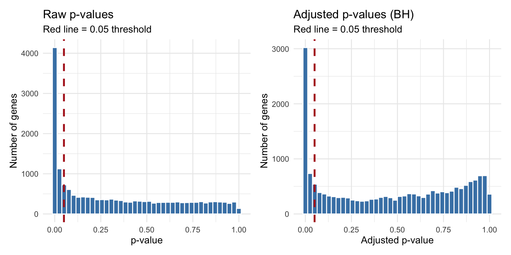
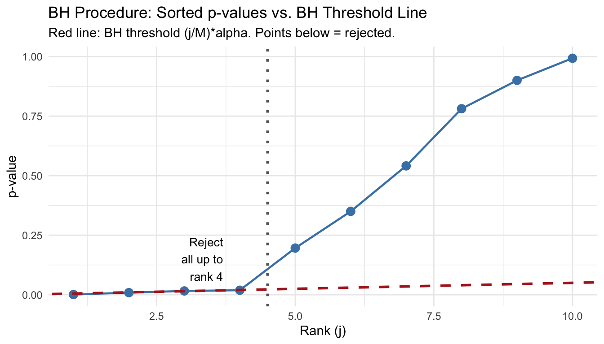
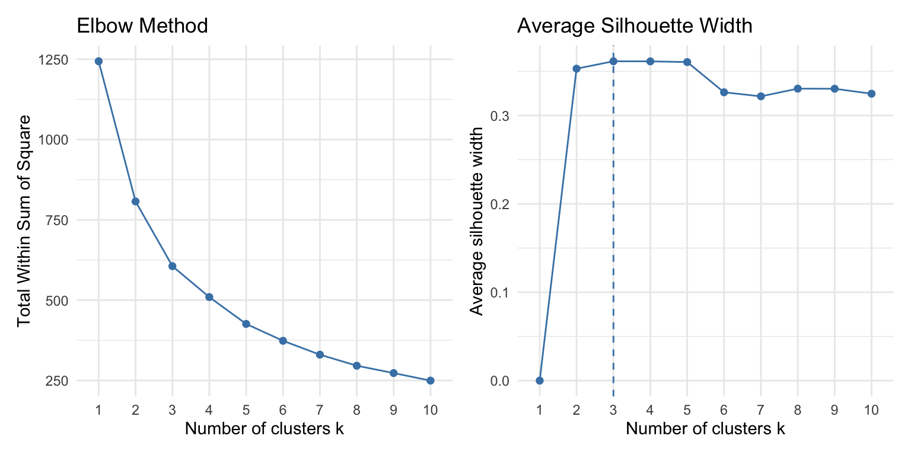
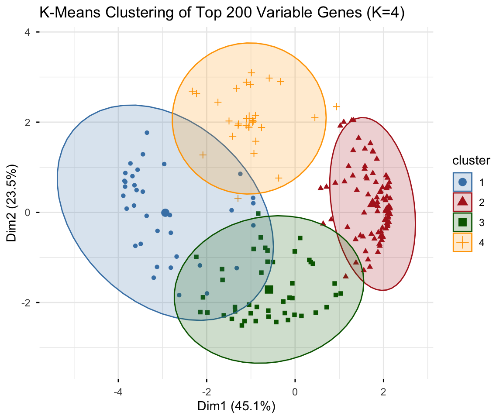
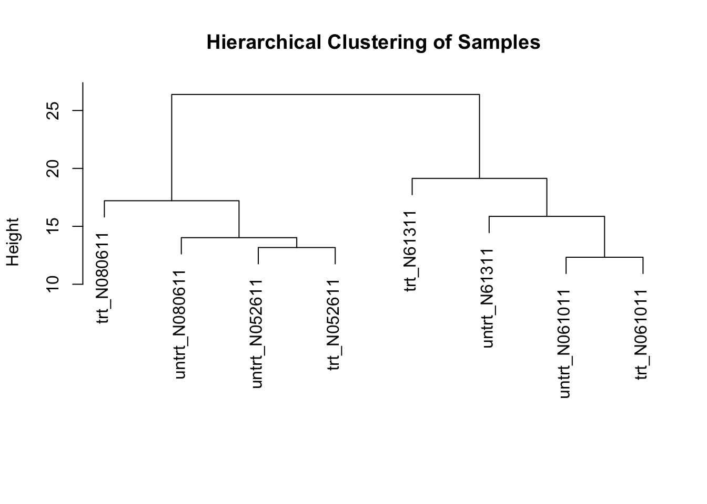
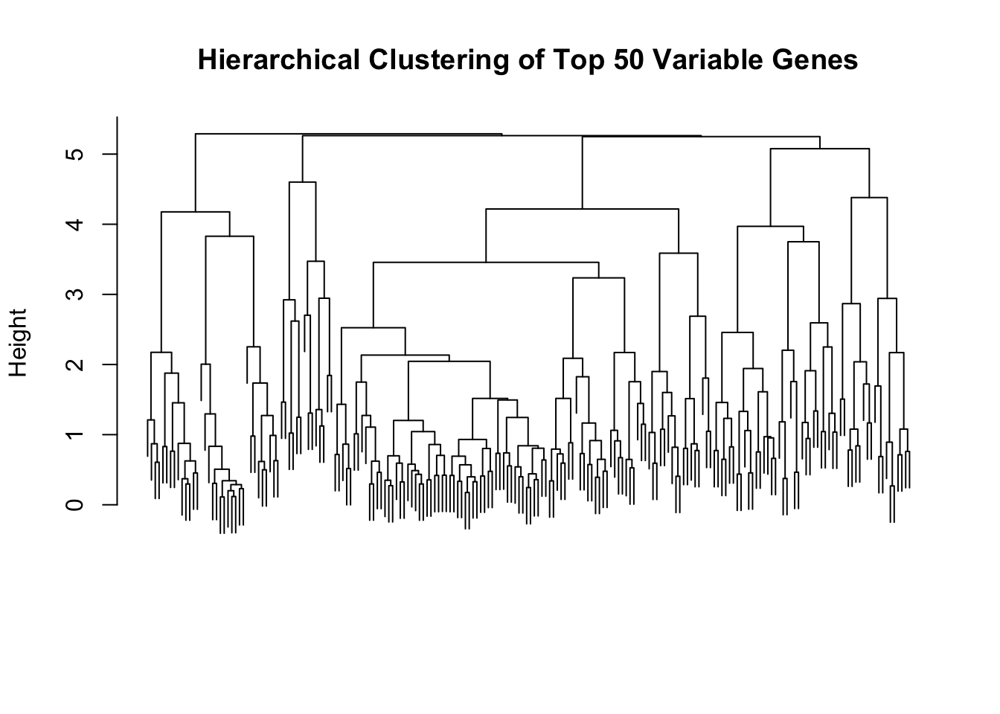
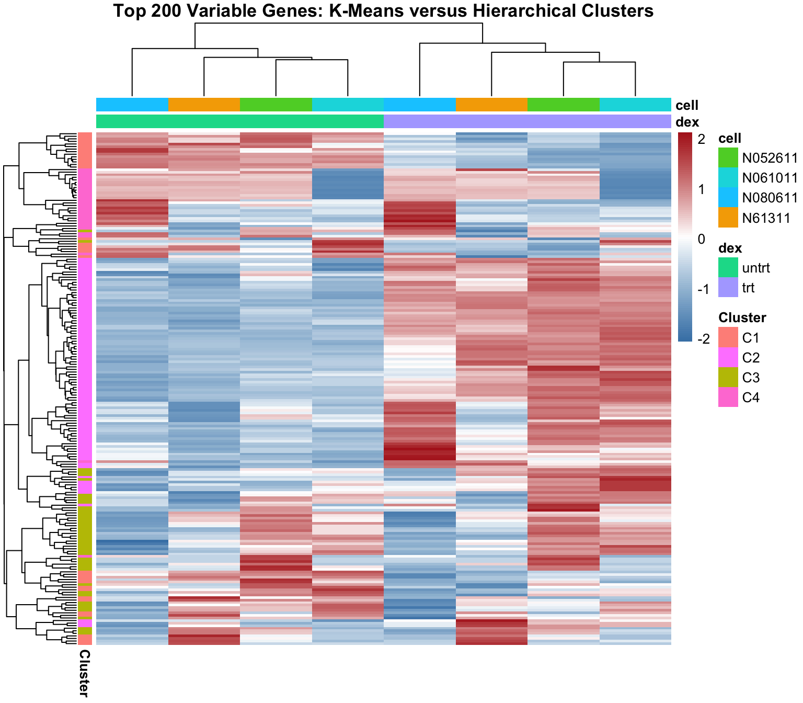
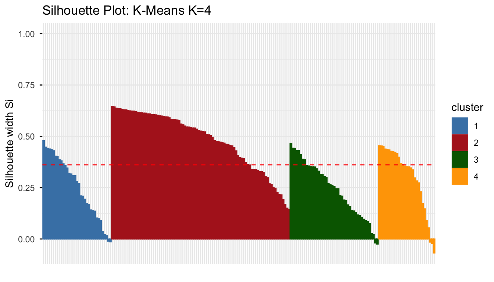

library(tidyverse)
library(this.path)
library(SummarizedExperiment)
library(DESeq2)
library(airway)
library(factoextra)
library(cluster)
library(pheatmap)
library(patchwork)
setwd(this.dir())
data(airway)Day 13: Multiple Testing and Clustering
SC INBRE Biostatistics Summer Intensive 2026
1 Overview
Yesterday we produced a DESeq2 results table with one row per gene. Two columns appeared in that table – pvalue and padj – and we said to always use padj. Today we explain why, and then turn to a related question: once you have a list of differentially expressed genes, how do you find structure in it?
Two topics:
- Part 1: Multiple Testing. What the
padjcolumn actually contains, why raw p-values are not usable for 20,000 simultaneous tests, and how the Benjamini-Hochberg procedure fixes this. - Part 2: Clustering. K-means and hierarchical clustering, how to choose the number of clusters, and how these methods connect to the heatmaps and PCA plots from Days 11–12.
Throughout we use the airway dataset so that every result connects directly to yesterday’s analysis.
2 Part 1: Multiple Testing
2.1 The Problem
Let us start with a concrete demonstration. If we test one gene at \(\alpha = 0.05\) and the gene is not differentially expressed, there is a 5% chance of a false positive. That is an acceptable error rate for one test. But in an RNA-seq experiment we run thousands of tests simultaneously.
# How many tests does DESeq2 actually run on the airway data?
# Re-run the Day 12 DESeq2 analysis quickly
counts <- assay(airway)
sample_info <- as.data.frame(colData(airway))
dds <- DESeqDataSetFromMatrix(
countData = counts,
colData = sample_info,
design = ~ cell + dex
)
dds$dex <- relevel(dds$dex, ref = "untrt")
keep <- rowSums(counts(dds)) >= 10
dds <- dds[keep, ]
deseq_dds <- DESeq(dds)
res <- results(deseq_dds)
# How many genes were tested?
cat("Total genes tested:", sum(!is.na(res$pvalue)), "\n")Total genes tested: 22369 # If we used raw p-values at alpha = 0.05, how many false positives
# would we expect purely by chance if NO gene were truly DE?
n_tested <- sum(!is.na(res$pvalue))
expected_fp <- 0.05 * n_tested
cat("Expected false positives at alpha = 0.05:", round(expected_fp), "\n")Expected false positives at alpha = 0.05: 1118 With roughly 12,000–15,000 genes being tested, we would expect 600–750 false positives from raw p-values alone, even in a dataset where nothing is differentially expressed. The raw p-value column is not a usable basis for calling significant genes.
2.2 Visualizing the Problem
res_df <- as.data.frame(res) |>
rownames_to_column("gene_id") |>
as_tibble() |>
filter(!is.na(pvalue), !is.na(padj))
p1 <- ggplot(res_df, aes(x = pvalue)) +
geom_histogram(bins = 40, fill = "steelblue", color = "white") +
geom_vline(xintercept = 0.05, color = "firebrick",
linetype = "dashed", linewidth = 1) +
labs(title = "Raw p-values",
subtitle = "Red line = 0.05 threshold",
x = "p-value", y = "Number of genes") +
theme_minimal()
p2 <- ggplot(res_df, aes(x = padj)) +
geom_histogram(bins = 40, fill = "steelblue", color = "white") +
geom_vline(xintercept = 0.05, color = "firebrick",
linetype = "dashed", linewidth = 1) +
labs(title = "Adjusted p-values (BH)",
subtitle = "Red line = 0.05 threshold",
x = "Adjusted p-value", y = "Number of genes") +
theme_minimal()
p1 + p2
Reading the p-value histogram: a uniform distribution under the null (the flat region on the right) mixed with a spike near zero (the true positives) is the expected shape. The flat region tells you roughly how many null hypotheses are in your data; the spike tells you how many true signals there are.
2.3 Two Error Rates
The multiple testing literature distinguishes two quantities worth controlling.
Family-wise error rate (FWER): \[\text{FWER} = P(\text{at least one false positive})\]
False discovery rate (FDR): \[\text{FDR} = E\!\left(\frac{\text{false positives}}{\text{all rejections}}\right)\]
The FDR is a proportion, not a probability. Controlling FDR at 5% means that among all the genes you call significant, you expect at most 5% to be false positives. This is the right criterion for genomics: you can tolerate a few false leads in a list of 500 candidate genes, but you do not want half of them to be noise.
2.4 Bonferroni: Simple but Severe
The Bonferroni correction controls the FWER by dividing \(\alpha\) by the number of tests:
# Bonferroni threshold for airway data
alpha <- 0.05
bonf_threshold <- alpha / n_tested
cat("Bonferroni threshold:", formatC(bonf_threshold, format = "e", digits = 2), "\n")Bonferroni threshold: 2.24e-06 # How many genes pass?
cat("Genes significant after Bonferroni:",
sum(res_df$pvalue < bonf_threshold, na.rm = TRUE), "\n")Genes significant after Bonferroni: 1413 # Compare to unadjusted
cat("Genes with raw p < 0.05:",
sum(res_df$pvalue < 0.05, na.rm = TRUE), "\n")Genes with raw p < 0.05: 5609 Bonferroni demands a raw p-value below roughly \(3 \times 10^{-6}\) to call a gene significant. That is extremely conservative. In a dataset with strong treatment effects like airway, Bonferroni will still find many significant genes. But in a noisier study with weaker effects it would miss nearly everything. This is not caution – it is a different kind of error, called a Type II error (false negative).
2.5 The Benjamini-Hochberg (BH) Procedure
The BH procedure controls the FDR. The intuition is to compare each sorted p-value to a threshold that scales with its rank.
# Manual BH calculation on a small example
# (to make the procedure concrete before applying to 15,000 genes)
example_pvals <- c(0.0008, 0.009, 0.016, 0.019, 0.196,
0.350, 0.541, 0.781, 0.900, 0.993)
M <- length(example_pvals)
alpha <- 0.05
bh_df <- tibble(
rank = seq_along(example_pvals),
pvalue = sort(example_pvals),
threshold = (rank / M) * alpha,
below = pvalue <= threshold
)
bh_df# A tibble: 10 × 4
rank pvalue threshold below
<int> <dbl> <dbl> <lgl>
1 1 0.0008 0.005 TRUE
2 2 0.009 0.01 TRUE
3 3 0.016 0.015 FALSE
4 4 0.019 0.02 TRUE
5 5 0.196 0.025 FALSE
6 6 0.35 0.03 FALSE
7 7 0.541 0.035 FALSE
8 8 0.781 0.04 FALSE
9 9 0.9 0.045 FALSE
10 10 0.993 0.05 FALSE# The BH rule: reject all hypotheses up to and including
# the highest rank where the condition is met
k_star <- max(bh_df$rank[bh_df$below])
cat("Largest rank k where p_(k) <= (k/M)*alpha:", k_star, "\n")Largest rank k where p_(k) <= (k/M)*alpha: 4 cat("Reject hypotheses at ranks 1 through", k_star, "\n")Reject hypotheses at ranks 1 through 4 bh_df |>
ggplot(aes(x = rank, y = pvalue)) +
geom_point(size = 3, color = "steelblue") +
geom_line(color = "steelblue", linewidth = 0.8) +
geom_abline(slope = alpha / M, intercept = 0,
color = "firebrick", linetype = "dashed", linewidth = 1) +
geom_vline(xintercept = k_star + 0.5, color = "gray40",
linetype = "dotted", linewidth = 1) +
annotate("text", x = k_star - 0.3, y = 0.15,
label = paste("Reject\nall up to\nrank", k_star),
hjust = 1, size = 3.5) +
labs(x = "Rank (j)", y = "p-value",
title = "BH Procedure: Sorted p-values vs. BH Threshold Line",
subtitle = "Red line: BH threshold (j/M)*alpha. Points below = rejected.") +
theme_minimal()
The key insight: we reject everything with rank up to 4, even though rank 3’s p-value fell above its threshold. The BH rule is about the last rank where the condition is met, not every rank individually.
2.6 BH in Practice: DESeq2 Results
# Compute BH-adjusted p-values manually and compare to DESeq2's padj
manual_padj <- p.adjust(res_df$pvalue, method = "BH")
# They should match DESeq2's padj closely
tibble(
deseq2_padj = res_df$padj,
manual_padj = manual_padj
) |>
filter(!is.na(deseq2_padj)) |>
summarize(
max_diff = max(abs(deseq2_padj - manual_padj[!is.na(deseq2_padj)])),
mean_diff = mean(abs(deseq2_padj - manual_padj[!is.na(deseq2_padj)]))
)# A tibble: 1 × 2
max_diff mean_diff
<dbl> <dbl>
1 0 0The values are not identical, but this is not always the case. The differences can come from DESeq2’s independent filtering: before applying BH, DESeq2 automatically removes genes with very low mean expression (they would require extreme p-values to pass any threshold, so including them only hurts power for the genes that remain). The filtered genes get padj = NA, which is why you see NA values in the results table.
# Summary: raw vs adjusted
tibble(
Criterion = c("Raw p < 0.05", "BH adjusted p < 0.05",
"Bonferroni adjusted p < 0.05"),
`Genes passing` = c(
sum(res_df$pvalue < 0.05, na.rm = TRUE),
sum(res_df$padj < 0.05, na.rm = TRUE),
sum(p.adjust(res_df$pvalue, method = "bonferroni") < 0.05, na.rm = TRUE)
)
)# A tibble: 3 × 2
Criterion `Genes passing`
<chr> <int>
1 Raw p < 0.05 5609
2 BH adjusted p < 0.05 4000
3 Bonferroni adjusted p < 0.05 1438The BH procedure finds far more significant genes than Bonferroni, while still controlling the proportion of false discoveries. This is why the genomics field adopted it as the standard.
3 Part 2: Clustering
A list of 500 differentially expressed genes is hard to interpret one gene at a time. Clustering helps by grouping genes with similar expression patterns – and grouping samples with similar overall profiles – so you can identify biological themes rather than individual genes.
3.1 Setup: VST Data for Clustering
Clustering requires data on a comparable scale. We use the variance-stabilizing transformation (VST) from Day 12, restricted to the top 200 most variable genes.
vsd <- vst(deseq_dds, blind = FALSE)
# Keep the 200 most variable genes (across samples)
top_var_genes <- order(rowVars(assay(vsd)), decreasing = TRUE)[1:200]
mat <- assay(vsd)[top_var_genes, ]
# Scale each gene to zero mean and unit variance
mat_scaled <- t(scale(t(mat)))
cat("Matrix dimensions:", nrow(mat_scaled), "genes x",
ncol(mat_scaled), "samples\n")Matrix dimensions: 200 genes x 8 samples3.2 K-Means Clustering
3.2.1 Choosing K
The first step is deciding how many clusters to look for. Two diagnostic tools are the elbow plot and the silhouette width.
# Elbow plot: total within-cluster sum of squares vs K
p_elbow <- fviz_nbclust(mat_scaled, kmeans,
method = "wss",
k.max = 10,
nstart = 25) +
labs(title = "Elbow Method") +
theme_minimal()
# Silhouette width vs K
p_sil <- fviz_nbclust(mat_scaled, kmeans,
method = "silhouette",
k.max = 10,
nstart = 25) +
labs(title = "Average Silhouette Width") +
theme_minimal()
p_elbow + p_sil
Reading these plots:
- Elbow plot: look for a bend where adding more clusters gives diminishing returns. A clear elbow at \(K = 3\) or \(K = 4\) is common in gene expression data.
- Silhouette plot: choose the \(K\) that maximizes the average silhouette width. Values above 0.5 indicate reasonably well-separated clusters; values near 0.2 indicate weak structure.
3.2.2 Fitting K-Means
set.seed(2026)
km_fit <- kmeans(mat_scaled, centers = 4, nstart = 25)
table(km_fit$cluster)
1 2 3 4
35 91 45 29 fviz_cluster(km_fit,
data = mat_scaled,
geom = "point",
ellipse.type = "norm",
palette = c("steelblue","firebrick","darkgreen","orange"),
ggtheme = theme_minimal()) +
labs(title = "K-Means Clustering of Top 200 Variable Genes (K=4)")
The cluster plot projects the 200-dimensional data onto the first two principal components for visualization. The four clusters represent groups of genes with similar expression profiles across the eight samples.
3.3 Hierarchical Clustering
K-means required us to choose \(K = 4\) upfront. Hierarchical clustering builds a tree that shows all possible groupings, letting us choose the number of clusters after seeing the structure.
3.3.1 Clustering Samples
With only 8 samples, hierarchical clustering produces a readable dendrogram and is the standard way to check whether samples group by treatment.
# Sample-level clustering (columns of the VST matrix)
sample_dist <- dist(t(mat_scaled), method = "euclidean")
hc_samples <- hclust(sample_dist, method = "complete")
# Color labels by treatment group
dend_labels <- colData(vsd)$dex[order.dendrogram(as.dendrogram(hc_samples))]
label_colors <- ifelse(dend_labels == "trt", "firebrick", "steelblue")
plot(hc_samples,
main = "Hierarchical Clustering of Samples",
xlab = "",
sub = "",
labels = paste(colData(vsd)$dex,
colData(vsd)$cell, sep = "_")[hc_samples$order])
# Cut to 2 clusters and check against treatment labels
sample_clusters <- cutree(hc_samples, k = 2)
table(Cluster = sample_clusters, Treatment = colData(vsd)$dex) Treatment
Cluster untrt trt
1 4 0
2 0 4If the clustering is working as expected, the two clusters should correspond closely to the treated and untreated groups. Any sample that clusters with the wrong group is worth investigating.
3.3.2 Clustering Genes
# Gene-level clustering (rows) -- use a smaller set for a readable plot
top200 <- order(rowVars(assay(vsd)), decreasing = TRUE)[1:200]
mat200 <- t(scale(t(assay(vsd)[top200, ])))
gene_dist <- dist(mat200, method = "euclidean")
hc_genes <- hclust(gene_dist, method = "complete")
plot(hc_genes,
main = "Hierarchical Clustering of Top 50 Variable Genes",
xlab = "",
sub = "",
labels = FALSE)
abline(h = 12, lty = 2, col = "firebrick")
# Cut to 4 clusters
gene_clusters_hc <- cutree(hc_genes, k = 4)
table(gene_clusters_hc)gene_clusters_hc
1 2 3 4
35 14 52 99 The dashed line shows where we would cut the tree to get 4 clusters. Adjusting the cut height changes the number of clusters: higher cut = fewer, coarser clusters; lower cut = more, finer clusters.
3.3.3 Comparing K-Means and Hierarchical Results
# Do the two methods agree on the top 200 genes?
comparison <- tibble(
kmeans_cluster = km_fit$cluster,
hc_cluster = gene_clusters_hc
)
table(KMeans = comparison$kmeans_cluster,
Hierarchical = comparison$hc_cluster) Hierarchical
KMeans 1 2 3 4
1 14 6 15 0
2 0 0 3 88
3 0 2 33 10
4 21 6 1 1Perfect agreement between two different methods would be unusual. Some genes that K-means puts in one cluster may land in a different cluster hierarchically. Where both methods agree, you can be more confident that a grouping reflects real biological structure rather than an artifact of the algorithm.
3.3.4 Visualizing Gene Clusters in a Heatmap
# Add cluster labels to the row annotation
gene_clusters <- data.frame(
Cluster = factor(paste0("C", km_fit$cluster)),
row.names = names(km_fit$cluster)
)
col_anno <- colData(vsd) |>
as_tibble(rownames = "sample") |>
select(sample, dex, cell) |>
column_to_rownames("sample")
pheatmap(mat_scaled,
annotation_row = gene_clusters,
annotation_col = col_anno,
cluster_rows = TRUE,
cluster_cols = TRUE,
show_rownames = FALSE,
show_colnames = FALSE,
color = colorRampPalette(
c("steelblue", "white", "firebrick"))(100),
main = "Top 200 Variable Genes: K-Means versus Hierarchical Clusters")
Look at whether the gene clusters (row annotation) correspond to blocks of consistently up- or down-regulated genes across the treated vs. untreated samples. If K-means is working well, each cluster should show a coherent expression pattern.
3.4 Silhouette Widths: Evaluating Cluster Quality
# Silhouette plot for the K-means solution (K=4)
sil_obj <- silhouette(km_fit$cluster, dist(mat_scaled))
fviz_silhouette(sil_obj,
palette = c("steelblue","firebrick","darkgreen","orange"),
ggtheme = theme_minimal()) +
labs(title = "Silhouette Plot: K-Means K=4") cluster size ave.sil.width
1 1 35 0.25
2 2 91 0.48
3 3 45 0.24
4 4 29 0.30
Reading the silhouette plot:
- Each bar is one gene, colored by its cluster.
- Tall bars (near 1): the gene fits well in its assigned cluster and is far from the nearest other cluster.
- Short or negative bars: the gene is ambiguous – it is almost as close to another cluster as to its own.
- Average silhouette widths near 0.1–0.2 are common for high-dimensional genomics data. This does not mean the clustering is wrong; it means the clusters are not perfectly separated in the full high-dimensional space, which is expected.
4 Summary
Multiple testing:
- Testing \(M\) genes simultaneously at \(\alpha = 0.05\) generates an expected \(0.05 \times M\) false positives from raw p-values alone.
- Bonferroni controls the FWER by multiplying p-values by \(M\). Very conservative; rarely appropriate in genomics.
- The Benjamini-Hochberg procedure controls the FDR. If you call all genes with
padj < 0.05significant, at most 5% of those calls are expected to be false positives. This is what DESeq2’spadjcolumn contains. Always use it.
Clustering:
- K-means partitions genes (or samples) into \(K\) groups by minimizing within-cluster variance. Choose \(K\) with the elbow plot or silhouette width. Always scale your data and use
nstart > 1. - Hierarchical clustering builds a dendrogram without requiring \(K\) upfront. Complete linkage is the default. Cut the tree at any height to get any number of clusters.
- Clustering is exploratory. Validate findings by checking whether two methods agree, whether the clusters show coherent patterns in a heatmap, and whether cluster membership correlates with known biology.
Tomorrow: PCA and penalized regression in the genomics context.